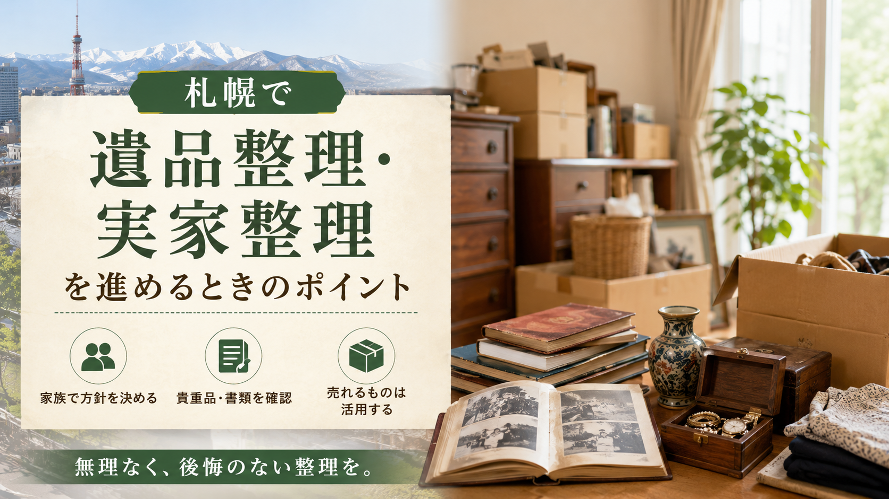

北海道お問合せ 10:00-20:00 年中無休
LINE・WEB受付
LINE査定
ESTATE CLEANUP / SAPPORO
札幌で遺品整理や実家整理を始める方向けの実用ガイド。家族での方針決め、重要書類・貴重品の確認、冬場の整理スケジュール、買取できる物の仕分け、家具家電の搬出、思い出の品の扱い、出張買取の活用、札幌市のごみ処分ルール、空き家対策、業者選びまで、無理なく進めるための手順とチェックポイントをまとめました。

札幌で遺品整理や実家整理を進めるときは、ただ不用品を片付けるだけでなく、「何を残すか」「何を手放すか」「どのように処分するか」を順番に考えることが大切です。
特に実家の整理では、家具・家電・衣類・食器・書類・思い出の品などが大量に残っていることも多く、家族だけで一気に進めようとすると、時間的にも精神的にも負担が大きくなりがちです。
札幌はマンション、戸建て、郊外の一軒家、古い住宅地など住環境が幅広いため、建物の状況や搬出経路、冬場の天候なども整理作業に影響します。無理に短期間で終わらせようとせず、計画的に進めることが重要です。
遺品整理や実家整理で最初に行いたいのは、家族間で方針を共有することです。
誰が作業の中心になるのか、残すものは誰が判断するのか、売却・処分・保管の基準をどうするのかを決めておかないと、後からトラブルになることがあります。
特に遺品整理では、思い出の品や貴重品、写真、手紙、趣味の道具など、金銭的な価値だけでは判断できないものが多くあります。
家族それぞれの思い入れが違うため、勝手に処分してしまうのではなく、必要に応じて写真を共有したり、一時保管する箱を作ったりしながら進めると安心です。
片付けを始める前に、まず確認したいのが貴重品や重要書類です。
現金、通帳、印鑑、保険証券、不動産関係の書類、年金関係の書類、契約書、権利証、身分証明書、公共料金の明細などは、処分前に必ず探しておきましょう。
探しておきたい場所：家具の引き出し、仏壇まわり、押し入れ、タンス、金庫、書類棚、古いバッグの中などに保管されているケースもあります。
遺品整理の場合、相続や各種手続きに必要な書類が後から必要になることもあるため、紙類をまとめて捨てる前に一度丁寧に確認することが大切です。
札幌で遺品整理や実家整理を行う場合、冬場の作業には注意が必要です。
積雪や路面凍結がある時期は、荷物の搬出に時間がかかりやすく、トラックの駐車場所や搬出経路の確保も難しくなることがあります。
特に一戸建てや郊外の住宅では、玄関前や駐車スペースの除雪が必要になる場合もあります。大型家具や家電を運び出す際には、足元が滑りやすくなるため、家族だけで無理に作業するのは危険です。
おすすめのタイミング：可能であれば、雪が少ない時期に大きな整理を進めるか、冬場に行う場合は出張買取業者や整理業者に相談しながら進めると安心です。
実家整理では、すべてを不用品として処分する前に、売れるものがないか確認することが大切です。
家具、家電、ブランド品、時計、貴金属、着物、カメラ、オーディオ機器、楽器、骨董品、工具、趣味用品などは、状態や年式によって買取対象になることがあります。
特に札幌市内では、出張買取に対応している業者も多く、大型家具や重たい家電を自分で店舗まで運ばなくても査定してもらえる場合があります。
処分費用を抑えられるだけでなく、思わぬ品物に価値がつくこともあるため、捨てる前に一度査定を依頼するのがおすすめです。
札幌の住宅では、古い戸建てやマンションに大型家具・家電が残っているケースも少なくありません。
タンス、食器棚、ベッド、ソファ、冷蔵庫、洗濯機などは、自力で運び出すのが難しい品目です。階段、エレベーター、玄関幅、廊下の曲がり角などによっては、搬出に専門的な作業が必要になることもあります。
また、古い家電は年式によって買取が難しい場合があります。冷蔵庫・洗濯機・テレビ・エアコンなどは、リサイクル料金が発生するケースもあるため、買取できるものと処分になるものを事前に確認しておくとスムーズです。
遺品整理や実家整理で難しいのが、思い出の品の扱いです。
写真、手紙、アルバム、趣味の作品、記念品、衣類、日用品などは、他人から見ると不用品に見えても、家族にとっては大切なものかもしれません。
判断に迷うものは、すぐに捨てずに「保留箱」を作るのがおすすめです。一度持ち帰って時間を置いてから判断することで、後悔を防ぎやすくなります。
量が多い場合は、写真に撮ってデータで残す方法もあります。すべてを物として残すのではなく、思い出を残す形を工夫することも大切です。
札幌で遺品整理や実家整理を進める際は、出張買取を活用すると作業の負担を大きく減らせます。
出張買取では、査定員が自宅まで来てくれるため、大型家具や家電、重たい品物を自分で運ぶ必要がありません。
また、複数の品物をまとめて査定してもらえるため、整理の初期段階で「売れるもの」と「処分が必要なもの」を分けやすくなります。
特に実家が札幌市内や近郊にある場合、対応エリア内であれば比較的スムーズに訪問してもらえることが多いです。引越し前、空き家整理前、不動産売却前などにも利用しやすい方法です。
買取できないものについては、札幌市のごみ分別ルールに沿って処分する必要があります。
大型ごみ、燃やせるごみ、燃やせないごみ、資源物、家電リサイクル対象品など、品目によって処分方法が異なります。
特に大型家具や寝具、古い家電などは、通常のごみとして出せない場合があります。自治体のルールを確認せずに処分しようとすると、回収されなかったり、追加の手続きが必要になったりすることがあります。
進め方のコツ：大量の不用品がある場合は、一度にすべて出そうとせず、買取・譲渡・自治体処分・専門業者への依頼を組み合わせると効率的です。
実家が空き家になる場合は、できるだけ早めに整理を始めることが大切です。
長期間そのままにしておくと、湿気、カビ、害虫、劣化、冬場の凍結、雪害などのリスクが高まります。札幌では冬の寒さや積雪の影響もあるため、空き家管理を後回しにすると建物の状態が悪くなることがあります。
また、不動産売却や賃貸活用を考えている場合、室内に荷物が大量に残っていると査定や内覧に影響することもあります。
早めに整理を進めておくことで、売却、解体、リフォーム、賃貸など次の選択肢を検討しやすくなります。
遺品整理業者や不用品回収業者、出張買取業者に依頼する場合は、見積もり内容をしっかり確認しましょう。
作業費、搬出費、処分費、買取金額、追加料金の有無、対応範囲などを事前に確認しておくことが大切です。
特に、買取と処分が同時に発生する場合は、「買取金額が作業費から差し引かれるのか」「処分費は別途かかるのか」を確認しておくと安心です。
また、遺品整理では丁寧な対応やプライバシーへの配慮も重要です。料金だけでなく、対応の誠実さや説明のわかりやすさも比較しましょう。
遺品整理や実家整理は、体力的にも精神的にも負担が大きい作業です。
特に札幌のように冬場の作業条件が厳しい地域では、大型家具の搬出や大量の荷物整理を家族だけで行うのは大変です。
無理にすべて自分たちで片付けようとせず、出張買取、遺品整理業者、不用品回収、自治体の大型ごみ回収などを組み合わせながら進めると、負担を減らせます。
大切なのは、早く終わらせることだけではありません。家族が納得できる形で、必要なものを残し、不要なものを整理し、次の生活や住まいの活用につなげることです。
札幌で遺品整理・実家整理を進めるときは、まず家族で方針を決め、貴重品や重要書類を確認し、売れるものと処分するものを分けることが大切です。
札幌では冬場の積雪や搬出条件にも注意が必要なため、作業時期や搬出方法も考えておきましょう。
家具・家電・ブランド品・着物・趣味用品などは、捨てる前に出張買取を利用することで、処分費用を抑えられる可能性があります。一方で、買取できないものは札幌市の分別ルールに沿って処分する必要があります。
遺品整理や実家整理は、家族にとって大切な節目となる作業です。無理なく、焦らず、必要に応じて専門業者の力も借りながら、後悔のない整理を進めていきましょう。
家まるごと、しっかり高く。LINEで写真を送るだけで仮査定OK。
最短即日でお伺いします。査定無料・キャンセル料無料。